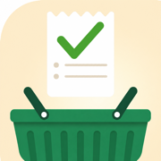

FreshList SupportGrocery lists organized by store, with items that come back on schedule.
Email hernan078@gmail.com and you'll hear back within a couple of days. Include your iOS version and a screenshot if something looks wrong.
Give an item a schedule (say, Milk — weekly). When you check it off, it disappears from your list, then returns automatically when it's due again. You can browse everything on a schedule from the recurring items view.
Sync runs through your iCloud account. Check that both devices are signed into the same Apple Account, that iCloud Drive is on, and that FreshList is enabled in Settings → Apple Account → iCloud. Sync can take a moment after a change; opening the app foreground refreshes it.
With FreshList Plus, share a store from the store's screen. Your household members accept the invite and everyone sees the same list, updated live as anyone adds or checks off items.
Widgets are part of FreshList Plus. Once Plus is active, long-press your Home Screen → tap + → search "FreshList" to add the Store or Grocery Run widget. If a widget looks stale, opening the app refreshes it.
Open Settings in the app, tap the Plus badge (or the FreshList Plus card), and choose Restore. Make sure you're signed into the App Store with the account that made the purchase. Plus also works for your family through Apple Family Sharing.
Subscriptions are managed by Apple: Settings → Apple Account → Subscriptions → FreshList Plus → Cancel. You keep Plus until the end of the paid period.
Deleting the app removes its data from your device. To remove the synced copy from your iCloud: Settings → Apple Account → iCloud → Manage Storage → FreshList → Delete. See our privacy policy — we never hold a copy of your data.
FreshList collects no data. Read the full privacy policy.